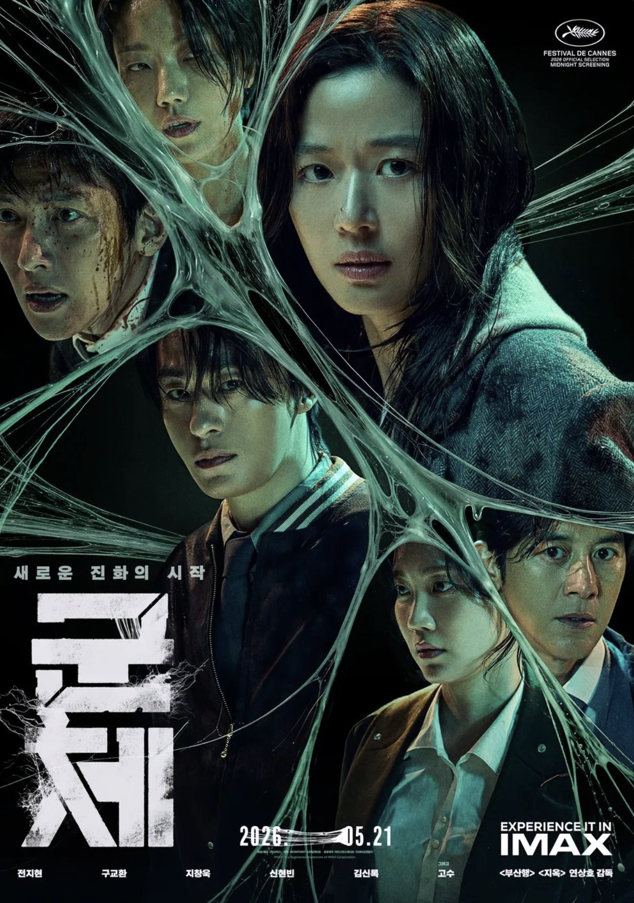
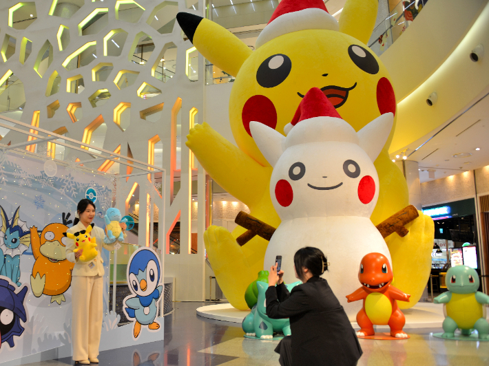
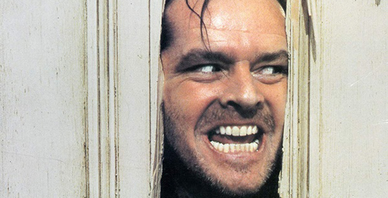
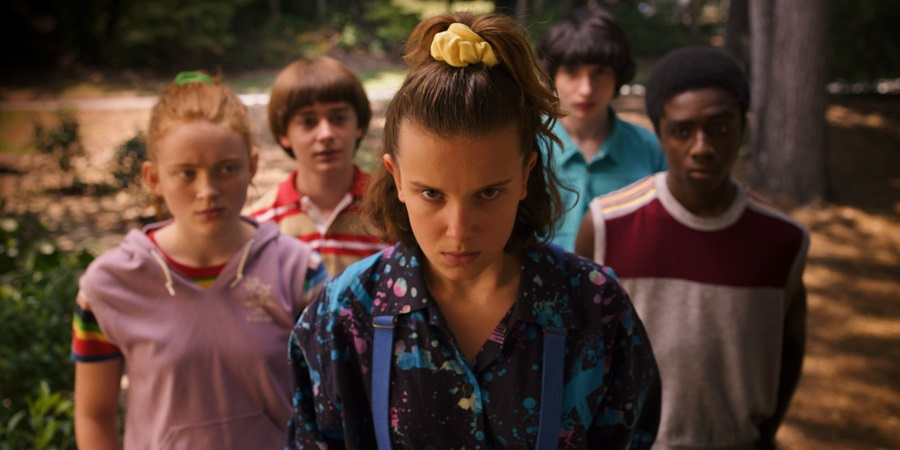

라플리어, 안녕하세요. 라플리는 요즘 퇴근길에 일부러 한 정거장 먼저 내려서 걸어요. 해가 길어지니까 저녁 7시인데도 환하고, 골목마다 카페 의자가 길까지 나와 있더라고요. 5월의 마지막 주, 이 짧은 봄을 그냥 보내기는 아쉬워서요.
그래서 이번 주 레터는 '잠시 다른 결로 가보고 싶은 한 주'를 주제로 골라봤어요. 평범한 동네 사람들이 우연히 초능력을 얻는 신작 〈원더풀스〉부터, 11년 만에 돌아온 전지현의 〈군체〉, 그리고 평생 산 하나만 그린 작가의 회고전까지. 라플리: 라플리어, 화면 속 누군가의 능력을 잠깐 빌려서라도 이번 한 주가 조금 다르게 흘러갔으면 좋겠어요.
by. 라플리 🪐
- 위클리 픽 5월 후반 신작 4편 — 원더풀스 · 소울메이트 · 취사병 전설이 되다 · 군체
- 이동진·안현모·궤도의 PICK 안현모가 박은빈·유인식 감독과 직접 만난 〈원더풀스〉 회차
- 이번 주 꼭 가봐야 할 전시·팝업 유영국 회고전 · 포켓몬 30주년 팝업
- 5월의 마지막을 채울 한 편 더 비슷한 결로 빠져드는 추천 2편 (별점·한줄평)
"평범한 한 주에, 잠깐 다른 결 한 스푼"
 1
1
 2
2

41. 원더풀스⚡: 〈이상한 변호사 우영우〉의 유인식 감독과 박은빈, 다시 만났어요. 이번엔 세기말 1999년을 배경으로, 우연히 초능력을 얻은 동네 사람들이 빌런에 맞서는 코믹 어드벤처예요. 라플리: 우영우의 따뜻한 결이 초능력 장르로 옮겨가면 어떻게 풀릴지 궁금했다면, 답은 이 한 편에 있어요. 8부작 전편이 5/15에 풀려서 주말 몰아보기에 딱이고요.
2. 소울메이트🌌: 베를린·서울·도쿄 세 도시를 오가는 한일 합작 8부작이에요. 일본을 떠나온 '류'와 한국인 복서 '요한'이 우연히 마주쳐서 10년의 인연을 이어가요. 옥택연이 5년 만에 드라마로 돌아온 작품이기도 해요. 라플리: 누군가를 우연히 마주쳐서 인생이 통째로 바뀐 적, 있으세요? 그 결이 8부작 안에 차곡차곡 쌓여 있어요.
3. 취사병 전설이 되다🍳: 이등병 강성재가 '전설의 취사병'으로 거듭나는 밀리터리 쿡방 판타지예요. 게임처럼 화면에 퀘스트 UI가 뜨는 연출이 MZ 결에 꽂혀서, 첫 주에 티빙 유료 구독 기여 1위 + tvN 가구 시청률 6.2%로 출발했어요. 이번 주 25(월)·26(화)에 새 회차가 공개돼요. 라플리: "지금 들어가면 늦은 거 아닌가?" 싶다면 — 3화부터 들어가도 부담 없어요. 1·2화는 티빙 다시보기로 따라잡으면 돼요.
4. 군체🧟: 전지현이 11년 만에 스크린으로 돌아왔어요. 〈부산행〉 연상호 감독이 다시 풀어낸 K-좀비인데, 이번엔 '집단지성으로 업데이트되는 좀비'라는 새 설정이 핵심이에요. 칸 영화제 미드나잇 스크리닝에서 7분 기립박수를 받고 5/21에 곧장 국내 개봉했고, 개봉 첫 주 예매량 18만 돌파로 예매율 1위예요. 롯데시네마 예매


 1
1

21. 유영국: 산은 내 안에 있다⛰️: 한 작가가 평생 '산' 하나만 그렸다면, 그 산을 어떻게 봤을지 궁금하지 않으세요? 한국 추상미술의 선구자 유영국(1916-2002)의 탄생 110주년 회고전이에요. 미공개작 포함 170여 점, 60여 년 화업이 한 공간에 펼쳐져요. 라플리: 무료 관람이고, 시기별로 같은 산이 어떻게 다르게 그려졌는지 비교해보면 한 사람의 일생이 한 폭에 응축되는 감각이 와요. 서울시립미술관 서소문본관 · ~10.25
2. 포켓몬 30주년 파티 팝업🎂: 피카츄와 친구들의 30번째 생일 파티 콘셉트 팝업이에요. 풍선·케이크·리본으로 가득한 공간이고, 한정 '피카피카! 피카츄' 봉제 인형이 가장 인기. 5월 한 달 운영 중인데 이번 주말이 마지막 주차고요. 라플리: 주말은 굿즈가 빨리 소진돼요. 토요일 오전이 가장 한적해요. 트렌드팟 바이 올리브영N 성수 · ~5.31
신작 4편을 다 보셨다면, 비슷한 결로 더 깊게 빠져들 수 있는 두 편이에요. 이동진·안현모·궤도가 라플위클리 토크*에서 짚었던 작품들 중에서, 라플리가 '5월의 마지막을 채우기에 좋다'고 느낀 두 편을 골라왔어요.

호러로 알려졌지만, 다시 보면 한 가족이 고립된 공간에서 무너지는 심리극에 가까워요. 큐브릭의 좌우대칭 구도부터 한번 짚어보세요. 호텔의 공간 자체가 또 하나의 캐릭터처럼 작동해요.
라플위클리에서 더 보기 →
80년대 미국 시골 마을에 스티븐 킹 결의 초자연이 더해졌어요. 일레븐의 초능력이 사춘기와 겹쳐 가는 결이 특별하고, 시즌이 거듭될수록 인물들의 성장도 함께 따라가는 재미가 있어요.
라플위클리에서 더 보기 →이동진·안현모·궤도가 라플위클리 토크에서 짚었던 629편 안에서, 원하시는 결의 한 편을 추천 이유와 함께 골라드려요. 아래 키워드를 눌러보거나, 직접 적어보세요.
※ 1호 시연에서는 6개 키워드 안에서 작동해요. 자유 키워드 검색은 곧 라플앱 챗봇에서 만나요.
— 라플리 드림
퇴근길에 한 정거장 먼저 내려서 걷는 일, 점심에 평소 안 가던 골목으로 들어가는 일, 영화 한 편 보고 평소엔 안 듣던 OST를 찾아 듣는 일 — 라플리는 이런 작은 결의 변화가 화면 속 초능력만큼이나 한 주를 달라지게 한다고 믿어요. 이번 주 6편이 그런 작은 환기 하나를 만들어드릴 수 있다면, 첫 호의 임무 완수예요 ✨